<!DOCTYPE html>
<html lang="zh-TW">
<!-- head 開始 -->
<head>
    <meta charset="UTF-8">
    <meta name="viewport" content="width=device-width, initial-scale=1.0">
    <script src="https://kit.fontawesome.com/8d42bfc726.js" crossorigin="anonymous"></script>
    <link rel="stylesheet" href="https://stackpath.bootstrapcdn.com/bootstrap/4.4.1/css/bootstrap.min.css" integrity="sha384-Vkoo8x4CGsO3+Hhxv8T/Q5PaXtkKtu6ug5TOeNV6gBiFeWPGFN9MuhOf23Q9Ifjh" crossorigin="anonymous">
    <link rel="stylesheet" href="assets/style/all.css">
    <link href="https://fonts.googleapis.com/css2?family=Julius+Sans+One&family=Roboto:wght@100;300;400;500&display=swap" rel="stylesheet">
    <link rel="icon" href="assets/images/layout/header/chr_D.svg" type="image/x-icon">
    <!-- X-UA-Compatible設置IE兼容模式，什麼版本IE 就用什麼版本的標準模式 開始 -->
    <meta http-equiv="X-UA-Compatible" content="IE=edge">
    <!-- X-UA-Compatible設置IE兼容模式，什麼版本IE 就用什麼版本的標準模式 結束 -->
    <!-- 聲明我的 HTML 使用了 XML Friends Network (XFN) 微格式 開始 -->
    <link rel="profile" href="http://gmpg.org/xfn/11">
    <!-- 聲明我的 HTML 使用了 XML Friends Network (XFN) 微格式 結束 -->
    <!-- Safari在讀取網頁時就會知道我們希望這個網頁有原生APP的特性(像是在手機螢幕有自己的icon等等) 開始 -->
    <meta name="mobile-web-app-capable" content="yes">
    <meta name="apple-mobile-web-app-capable" content="yes">
    <meta name="apple-mobile-web-app-title" content="台北婚禮場地，台北戶外婚禮推薦｜DCT Wedding 拾夢西式婚禮">
    <!-- Safari在讀取網頁時就會知道我們希望這個網頁有原生APP的特性(像是在手機螢幕有自己的icon等等) 結束 -->
    
    <title>台北婚禮場地，台北戶外婚禮推薦｜DCT Wedding 拾夢西式婚禮</title>
    <meta name="description" content="台北婚禮場地推薦，萬豪酒店、amba松山意舍、美福飯店、紀州庵文學森林、青青食尚花園會館、台北花卉村，市區婚禮">
    <!-- 加上這段標籤跟沒加的道理是一樣的，等於搜尋引擎將正常索引及檢索，指定 -1 代表網頁摘要長度不限 開始 -->
    <meta name="robots" content="index, follow">
    <meta name="googlebot" content="index, follow, max-snippet:-1, max-image-preview:large, max-video-preview:-1">
    <meta name="bingbot" content="index, follow, max-snippet:-1, max-image-preview:large, max-video-preview:-1">
    <!-- 加上這段標籤跟沒加的道理是一樣的，等於搜尋引擎將正常索引及檢索，指定 -1 代表網頁摘要長度不限 結束 -->
    <link rel="canonical" href="http://dctwedding.com/blog_2019-02-13/">
    <meta property="og:locale" content="zh_TW">
    <meta property="og:type" content="article">
    <meta property="og:title" content="台北婚禮場地，台北戶外婚禮推薦｜DCT Wedding 拾夢西式婚禮">
    <meta property="og:description" content="台北婚禮場地推薦，萬豪酒店、amba松山意舍、美福飯店、紀州庵文學森林、青青食尚花園會館、台北花卉村，市區婚禮">
    <meta property="og:url" content="http://dctwedding.com/blog_2019-02-13/">
    <meta property="og:site_name" content="DCT Wedding 拾夢婚顧 西式婚禮 戶外婚禮">
    <meta property="article:modified_time" content="2020-06-26T15:19:33+00:00">
    <meta property="og:image" content="http://dctwedding.com/assets/resized_photo/blog_2019-02-13/台北婚禮場地，台北戶外婚禮-1.jpg">
    <meta property="og:image:width" content="1200">
    <meta property="og:image:height" content="630">
    <meta name="twitter:card" content="summary_large_image">
    <!-- google-analytics js 開始 -->
    <!-- google-analytics js 結束 -->
    <!-- fb js 開始 -->
    <!-- fb js 結束 -->
</head>
<!-- head 結束 -->

<body>
  <header class="header">
    <nav id="navApp" class="navbar navbar-expand-lg navbar-light bg-yellow fixed-top pt-3 pb-2 pt-md-4 pb-md-3"> <!--fixed-top-->
      <div class="container px-3">
          <a class="navbar-brand d-lg-none" href="index.html">
              
          </a>
          <button class="navbar-toggler" type="button" data-toggle="collapse" data-target="#navbarNavAltMarkup" aria-controls="navbarNavAltMarkup" aria-expanded="false" aria-label="Toggle navigation">
              <span class="navbar-toggler-icon"></span>
          </button>
          
          <div class="collapse navbar-collapse navbar-nav-left" id="navbarNavAltMarkup">
            <ul class="navbar-nav header-nav d-flex align-items-center align-items-lg-end">
                <li class="nav-item mb-lg-0 mb-4">
                    <a class="nav-link text-center d-flex flex-column" href="aboutUs.html">
                        About<span class="">關於我們</span>
                    </a>
                </li>
                <li class="nav-item mb-lg-0 mb-4">
                    <a class="nav-link text-center d-flex flex-column" href="service.html">
                        Service<span class="">服務項目</span>
                    </a>
                </li>
                <li class="nav-item mb-lg-0 mb-4">
                    <a class="nav-link text-center d-flex flex-column" href="portfolio.html">
                        Portfolio<span class="">作品錦集</span>
                    </a>
                </li>
                <li class="nav-item d-none d-lg-block mb-lg-0 mb-4">
                    <a class="navbar-brand" href="index.html">
                        
                    </a>
                </li>
                <li class="nav-item mb-lg-0 mb-4">
                    <a class="nav-link text-center d-flex flex-column" href="blog.html">
                        Story<span class="">婚顧故事</span>
                    </a>
                </li>
                <li class="nav-item mb-lg-0 mb-4">
                    <a class="nav-link text-center d-flex flex-column" href="feedback_fb.html">
                        Feedback<span class="">新人回饋</span>
                    </a>
                </li>
                <li class="nav-item mb-lg-0 mb-4">
                    <a class="nav-link text-center d-flex flex-column" href="survey.html">
                        Contact<span class="">線上預約</span>
                    </a>
                </li>
            </ul>
        </div>
        
      </div>
    </nav>
  </header>

  
<div class="post-content-inner container" style="text-align: center;">
<h1 class="post-title entry-title mb-4" style="text-align: center;font-size: 1.25rem;">台北婚禮場地，台北戶外婚禮｜台北西式婚禮</h1>
<div class="entry-content">
<p><span style="color: #879460;">台北市區｜紀州庵文學森林</span></p>
<p>台北市中正區同安街109巷4弄1號</p>
<p>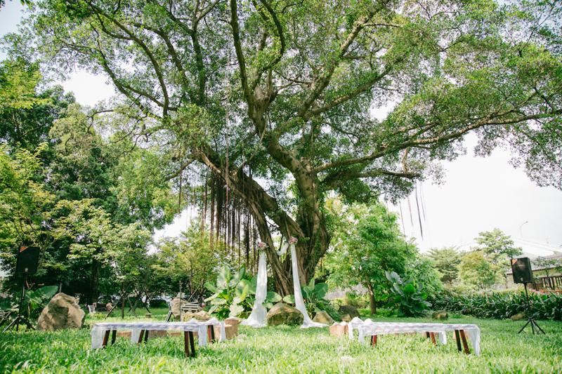</p>
<p>50-70人，戶外證婚｜戶外午茶</p>
<p><span style="color: #879460;">小編加碼推薦｜</span>日式古蹟與乾淨整潔的空曠草皮，有顆美麗的大樹可以裝飾成婚禮主視覺，</p>
<p>特別推薦給喜歡綠地且希望將證婚儀式舉辦在市區的新人呦！</p>
<p> </p>
<p><span style="color: #879460;">台北市區｜TAV Cafe藝術村餐坊</span></p>
<p>台北市中正區北平東路7號</p>
<p>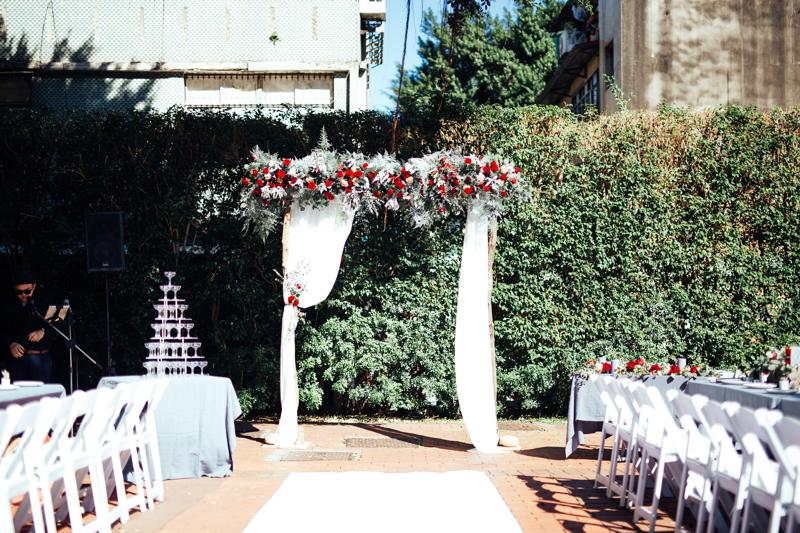</p>
<p>80-100人，戶外證婚＋宴客｜室內宴客</p>
<p><span style="color: #879460;">小編加碼推薦｜</span>位於城市中心的臺北國際藝術村，以紅磚地與植栽牆為景，適合賓客人數較少的派對、婚禮！</p>
<p> </p>
<p><span style="color: #879460;">台北市區｜青青食尚花園會館</span></p>
<p>台北市士林區至善路二段266巷32號</p>
<p>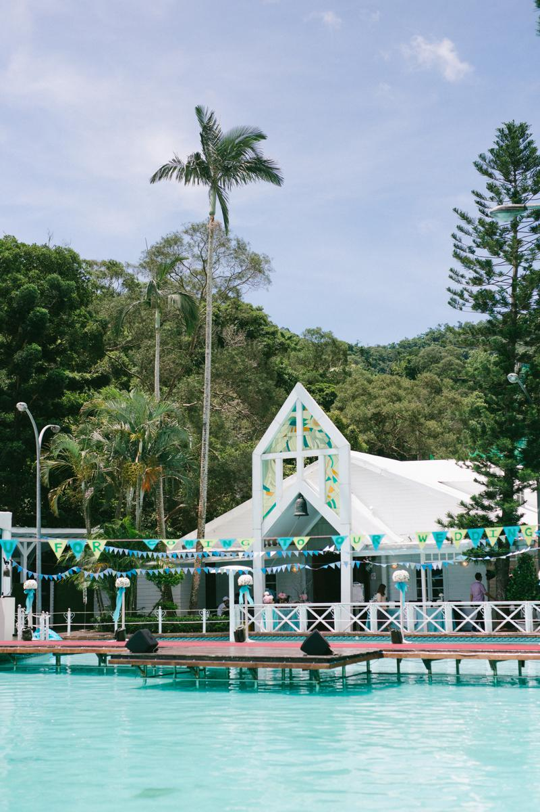</p>
<p>20-30桌，戶外證婚｜室內宴客</p>
<p><span style="color: #879460;">小編加碼推薦｜</span>池畔婚禮的好選擇，場地本身就有搭設帳棚，無須擔心雨天或是大熱天影響婚禮的進行</p>
<p>喜歡西式戶外婚禮但擔憂天氣的新人，推薦青青食尚花園會館給您！</p>
<p> </p>
<p><span style="color: #879460;">台北市區｜super 346</span></p>
<p>台北市中山區伊通街1號</p>
<p>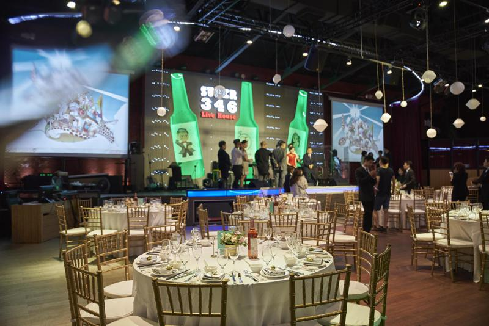</p>
<p>100-150人，室內宴客</p>
<p><span style="color: #879460;">小編加碼推薦｜</span></p>
<p>一定要特別介紹一下super346，這個場地的前身可是台啤的啤酒廠呢！對於台啤情有獨鍾的新人怎麼能錯過它！</p>
<p>也因為身為酒廠改建的場地，空間十分寬闊加上有大舞台，不用擔心會有死角看不到舞台喔。</p>
<p> </p>
<p><span style="color: #879460;">台北市區｜amba松山意舍</span></p>
<div class="mod" data-attrid="kc:/location/location:address" data-hveid="CAEQIw" data-md="1002" data-ved="2ahUKEwjRu9bxgbjgAhURMt4KHdNpBHkQkCkoAzAEegQIARAj" lang="zh-Hant-US">
<div class="Z1hOCe">
<div class="zloOqf kno-fb-ctx" data-dtype="d3ifr" data-local-attribute="d3adr" data-ved="2ahUKEwjRu9bxgbjgAhURMt4KHdNpBHkQghwoADAEegQIARAk">
<p><span class="LrzXr">台北市南港區市民大道七段8號</span></p>
</div>
</div>
</div>
<p>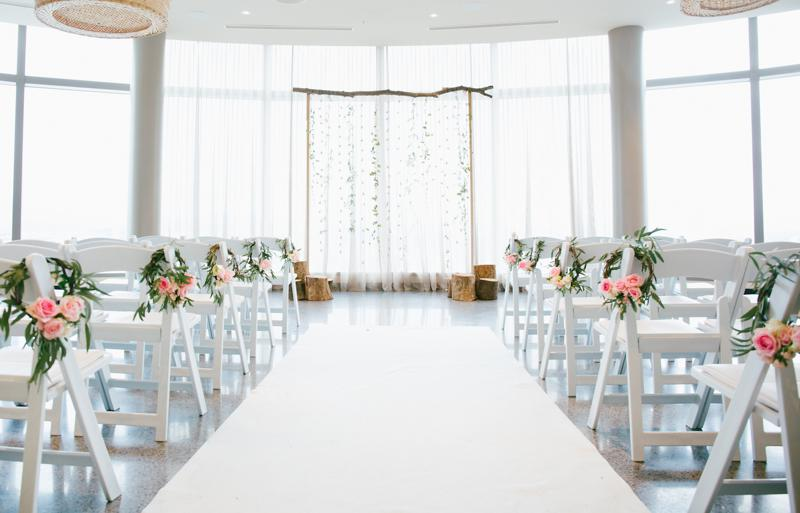</p>
<p>室內證婚30-50人｜室內宴客100-150人</p>
<p><span style="color: #879460;">小編加碼推薦｜</span>amba有個絕美的證婚場地一定要推薦給大家，很多新人會擔心在室內證婚會少了戶外自然光的美</p>
<p>這個場地最大的優勢就是超棒的採光，讓新人不管怎麼拍都是零死角啦！</p>
<p> </p>
<p><span style="color: #879460;">台北市區｜蔡瑞月舞蹈研究社</span></p>
<p>台北市中山區中山北路二段48巷10號</p>
<p>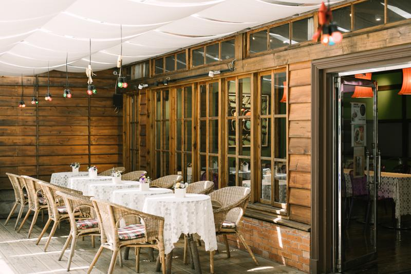</p>
<p>60-100人，戶外證婚｜室內宴客</p>
<p><span style="color: #879460;">小編加碼推薦｜</span>玫瑰古蹟，蔡瑞月舞蹈研究社，木造的建築讓場地別有風味，</p>
<p>另外這裡也有一片空曠草地可以舉辦證婚儀式喔！</p>
<p> </p>
<p><span style="color: #879460;">台北市區｜萬豪酒店</span></p>
<p>台北市中山區樂群二路199號</p>
<p></p>
<p>20桌以上（10人/桌），戶外證婚｜室內宴客</p>
<p><span style="color: #879460;">小編加碼推薦｜</span>8樓Garden Villa，它獨特的空中花園和歐式禮堂，低調又不失奢華是許多新人選擇它的原因！</p>
<p> </p>
<p><span style="color: #879460;">台北市區｜圓山聯誼會</span></p>
<p>台北市中山區北安路59-2號</p>
<p>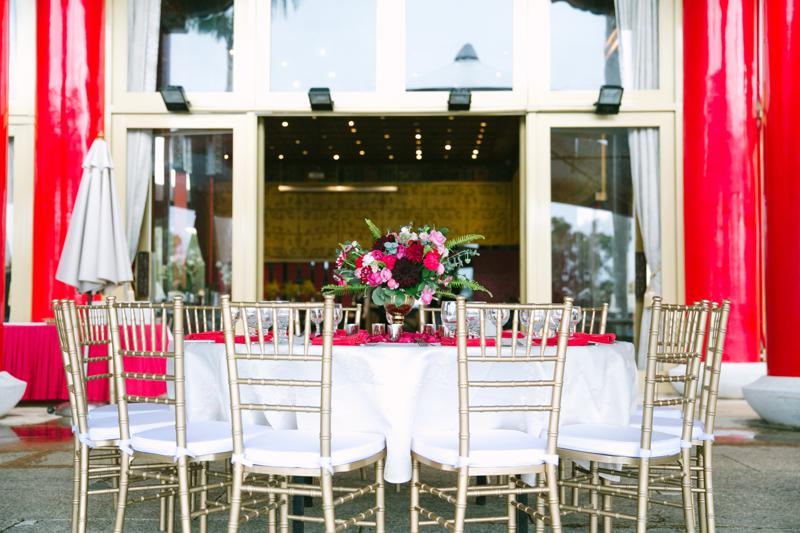</p>
<p>100-320人（最大容納人數為戶外＋室內），戶外證婚＋宴客｜室內宴客</p>
<p><span style="color: #879460;">小編加碼推薦｜</span>想辦場氣派奢華又有氣勢的婚禮，不要猶豫選擇圓山聯誼會就對了！</p>
<p>這裡是兼顧長輩喜愛又能完成心目中西式婚禮的不二選擇</p>
<p>小編還要偷偷告訴你..這裡也有一片草地可以舉辦證婚儀式喔 (快手刀去拾夢facebook看看我們在圓山的作品！）</p>
<p> </p>
<p><span style="color: #879460;">台北市區｜食尚曼谷</span></p>
<p>台北市士林區大東路54號</p>
<p></p>
<p>100-150人，戶外證婚＋宴客｜室內宴客</p>
<p><span style="color: #879460;">小編加碼推薦｜</span>坐落於士林的鬧區之中，復古且具設計感的場地，特別推薦給喜愛老宅風格的新人</p>
<p> </p>
<p><span style="color: #879460;">台北市區｜美福飯店</span></p>
<p>台北市中山區樂群二路55號</p>
<p>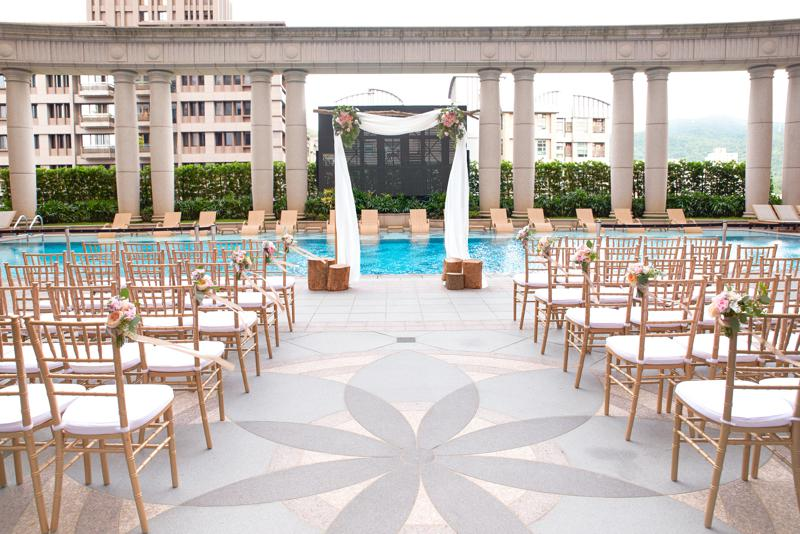</p>
<p>20桌以上（10人/桌），戶外證婚｜室內宴客</p>
<p><span style="color: #879460;">小編加碼推薦｜</span>美福的泳池池畔可舉辦證婚儀式、after party，建築採新古典風格，是不是別有一番風味呀！</p>
<p> </p>
<p><span style="color: #879460;">台北市區｜松菸14樓-臺北文創會所 Event Space</span></p>
<p>台北市信義區菸廠路88號</p>
<p>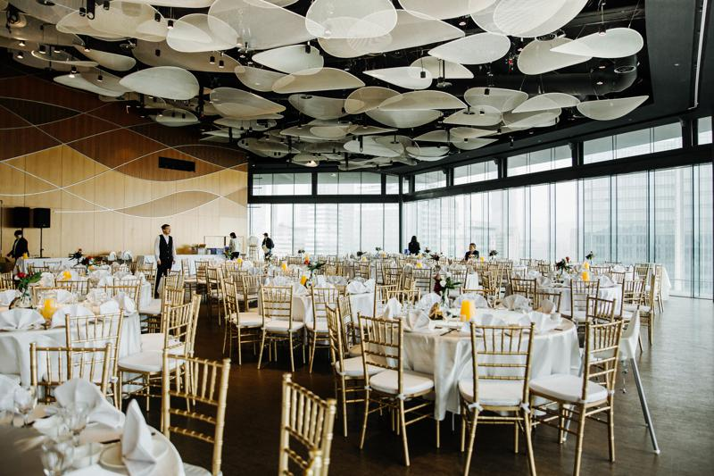</p>
<p>35-40桌（10人/桌），戶外證婚｜室內宴客</p>
<p><span style="color: #879460;">小編加碼推薦｜</span></p>
<p>人緣好到爆、親朋好友坐滿滿的新人，雖然讓小編眼紅羨慕又嫉妒，但還是無私的介紹給您這個激推場地～</p>
<p>不僅隱密性高，有高樓美景還擁有大片草地，室內廳的採光極好還非常氣派，</p>
<p>完全就是個讓新人多個願望一次滿足的夢幻場地嘛！</p>
<p> </p>
<p><span style="color: #879460;">台北市區｜君悅酒店凱寓廳</span></p>
<div class="mod" data-attrid="kc:/location/location:address" data-hveid="CAEQIA" data-md="1002" data-ved="2ahUKEwih7r_Xg7jgAhWb-mEKHU8tDMUQkCkoAjADegQIARAg" lang="zh-Hant-US">
<div class="Z1hOCe">
<div class="zloOqf kno-fb-ctx" data-dtype="d3ifr" data-local-attribute="d3adr" data-ved="2ahUKEwih7r_Xg7jgAhWb-mEKHU8tDMUQghwoADADegQIARAh">
<p><span class="LrzXr"><span class="LrzXr">台北市信義區松壽路2號</span></span></p>
<p>
</p></div>
</div>
</div>
<p>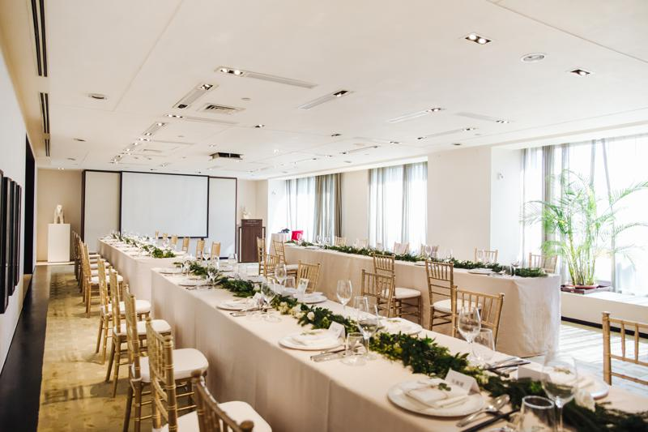</p>
<p>60人，戶外證婚｜室內宴客</p>
<p><span style="color: #879460;">小編加碼推薦｜</span>凱寓 The Residence 以高級私宅作為設計概念，希望能夠打造自宅婚禮、自家派對的輕鬆氛圍感</p>
<p>戶外空地也可以拍攝類婚紗或舉辦證婚儀式，還有101可以當作背景呢！</p>
<p> </p>
<p><span style="color: #879460;">台北市區｜台北花卉村</span></p>
<p>台北市士林區延平北路七段18-2號</p>
<p>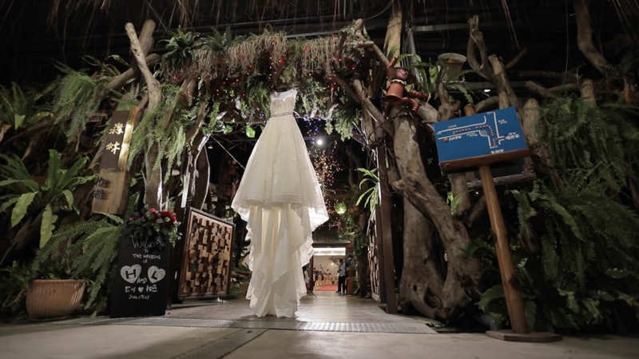</p>
<p>20-30桌（10人/桌），半戶外證婚｜室內宴客</p>
<p><span style="color: #879460;">小編加碼推薦｜</span>如同置身於童話故事中的婚宴場地，推薦給喜歡森林感的新人</p>
<p> </p>
<p><span style="color: #879460;">台北市區｜翡麗詩莊園</span></p>
<p>台北市松山區敦化北路232號</p>
<p>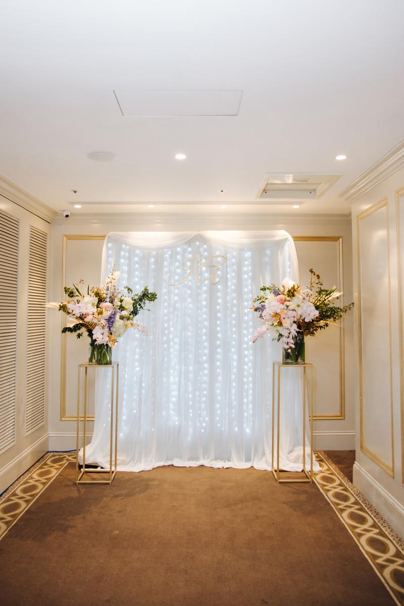</p>
<p>20-40桌人，戶外證婚＋室內宴客</p>
<p><span style="color: #879460;">小編加碼推薦｜</span>在台灣也能完成城堡婚禮！而且竟然是在熱鬧的台北市區，這真的是難能可貴的完美場地</p>
<p>除了微風花園可以舉辦證婚儀式，翡麗詩莊園還有個夢幻優雅卻不失莊嚴的森林教堂，供新人做選擇喔！</p>
<p> </p>
<p><span style="color: #879460;">台北市區｜香色 XIANG SE</span></p>
<p>台北市中正區湖口街1-2號</p>
<p>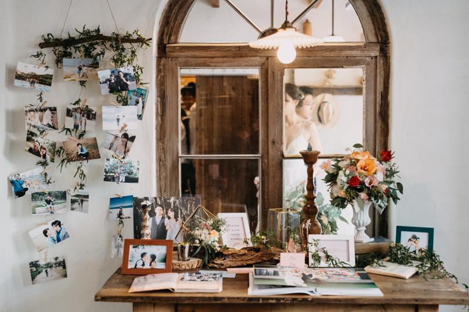</p>
<p>40-60人，戶外證婚＋宴客｜室內宴客</p>
<p><span style="color: #879460;">小編加碼推薦｜</span>香色走歐洲鄉村風，適合小型婚禮，</p>
<p>若只想與至親或好友(平輩場)在戶外庭院辦長桌餐敘、派對的新人，小編非常推薦這裡喔！</p>
<p> </p>
<p><span style="color: #879460;">市區｜寒舍艾麗</span></p>
<p>台北市信義區松高路18號</p>
<p><span style="color: #879460;">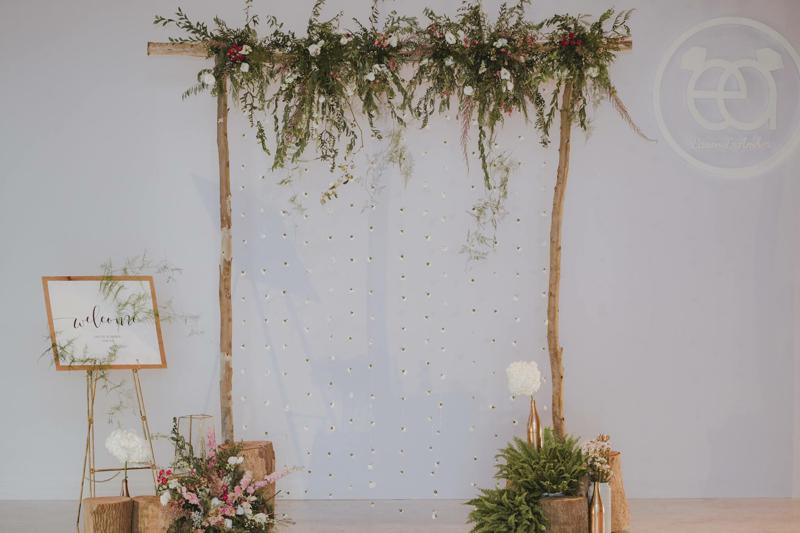</span></p>
<p>20-30桌（10人/桌），室內宴客</p>
<p><span style="color: #879460;">小編加碼推薦｜</span>寒舍艾麗以文化、藝術及生活美學相互融合為主軸，呈現出樸實簡約卻又不失雅致品味的精神</p>
<p> </p>
<p><span style="color: #879460;">市區｜大安東尼</span></p>
<p>台北市信義區市府路45號5F</p>
<p>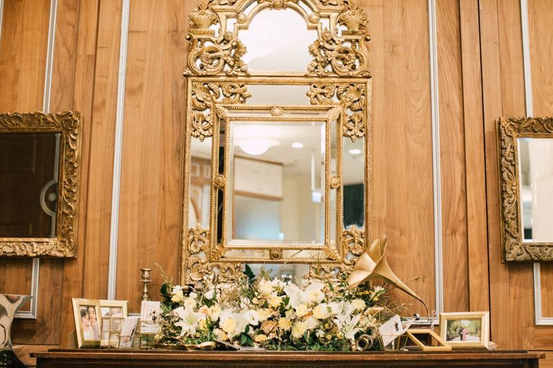</p>
<p>60-80人，室內宴客</p>
<p><span style="color: #879460;">小編加碼推薦｜</span>先來介紹一下這間位於101五樓的餐廳，DA ANTONIO By隨意鳥地方，主打義式料理，</p>
<p>小編一定要特別推薦給愛華麗歐風的新人！大安東尼會是你的好選擇！</p>
<p> </p>
<p><span style="color: #879460;">市區｜青田七六</span></p>
<p>台北市大安區青田街7巷6號</p>
<p>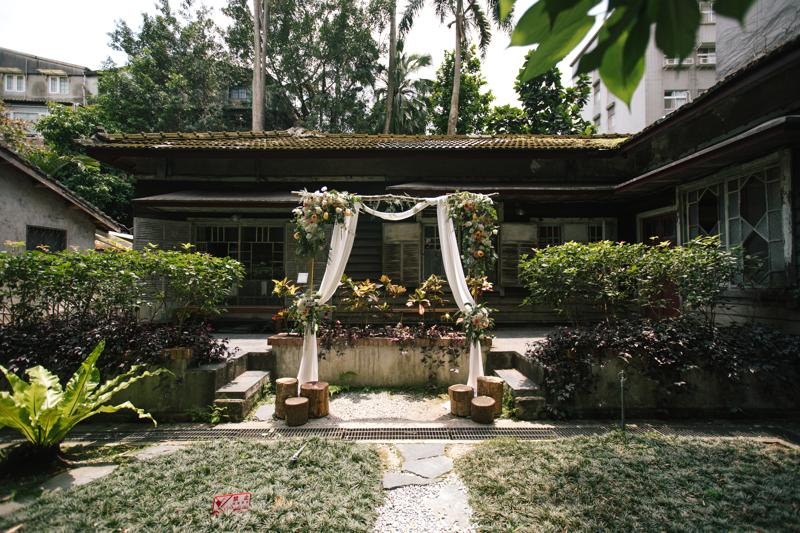</p>
<p>40-50人，戶外證婚｜室內宴客</p>
<p><span style="color: #879460;">小編加碼推薦｜</span>洋式和日式融合的建築特色，有故事的老屋為婚禮增添了的更多情感和味道</p>
<p> </p>
<p><span style="color: #879460;">市區｜孫立人將軍官邸（陸軍聯誼廳）</span></p>
<p>台北市中正區南昌路一段136號</p>
<p>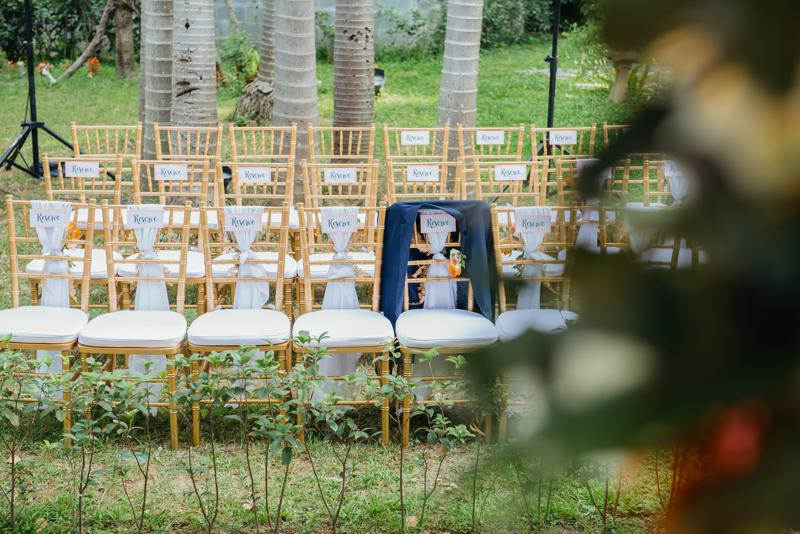</p>
<p>20-25桌（10人/桌），戶外證婚｜室內宴客</p>
<p><span style="color: #879460;">小編加碼推薦｜</span>和洋混合的日據時代古蹟，除了古色古香的場景，還有半戶外的溫室宴會廳，採光也非常好喔！</p>
<div class="SALvLe farUxc mJ2Mod">
<div class="i4J0ge">
<div class="EfDVh mod" data-attrid="kc:/location/location:address" data-hveid="CAcQAQ" data-md="1002" data-ved="2ahUKEwis7eHqrL_gAhUGvbwKHdMoB8wQkCkwEHoECAcQAQ" lang="zh-Hant-TW">
<div class="Z1hOCe">
<div data-dtype="d3ifr" data-local-attribute="d3adr" data-ved="2ahUKEwis7eHqrL_gAhUGvbwKHdMoB8wQghwoADAQegQIBxAC">
<p> </p>
<p><span style="color: #879460;">台北市區｜BELLAVITA</span></p>
<div class="mod" data-attrid="kc:/location/location:address" data-hveid="CAEQIw" data-md="1002" data-ved="2ahUKEwjRu9bxgbjgAhURMt4KHdNpBHkQkCkoAzAEegQIARAj" lang="zh-Hant-US">
<div class="Z1hOCe">
<div class="zloOqf kno-fb-ctx" data-dtype="d3ifr" data-local-attribute="d3adr" data-ved="2ahUKEwjRu9bxgbjgAhURMt4KHdNpBHkQghwoADAEegQIARAk">
<p><span class="LrzXr">台北市信義區松仁路28號</span></p>
</div>
</div>
</div>
</div>
</div>
</div>
</div>
</div>
<div data-dtype="d3ifr" data-local-attribute="d3adr" data-ved="2ahUKEwis7eHqrL_gAhUGvbwKHdMoB8wQghwoADAQegQIBxAC">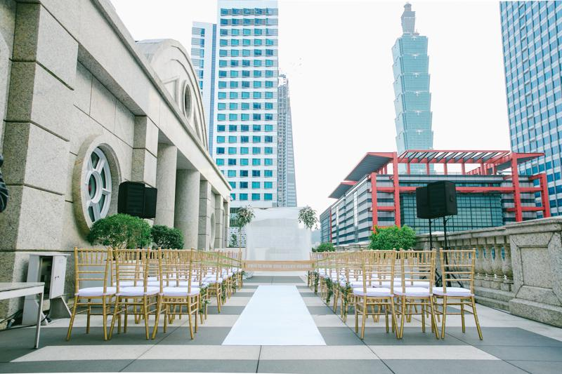</div>
<div data-dtype="d3ifr" data-local-attribute="d3adr" data-ved="2ahUKEwis7eHqrL_gAhUGvbwKHdMoB8wQghwoADAQegQIBxAC">
<p>120人，戶外證婚｜室內宴客</p>
<p><span style="color: #879460;">小編加碼推薦｜</span>建築融合歐式古典優雅與現代摩登氣息，位於信義精華地段，讓新人隨時都能與101拍上浪漫合照</p>
</div>
<div data-dtype="d3ifr" data-local-attribute="d3adr" data-ved="2ahUKEwis7eHqrL_gAhUGvbwKHdMoB8wQghwoADAQegQIBxAC">
<p> </p>
<p><span style="color: #879460;">市區｜維多麗亞酒店</span></p>
<p>台北市<span class="LrzXr">中山區敬業四路168號</span></p>
</div>
<div data-dtype="d3ifr" data-local-attribute="d3adr" data-ved="2ahUKEwis7eHqrL_gAhUGvbwKHdMoB8wQghwoADAQegQIBxAC">
<div class="mod" data-attrid="kc:/location/location:address" data-hveid="CAoQAA" data-md="1002" data-ved="2ahUKEwjKgbyEsb_gAhVM5rwKHb1XD-sQkCkwHXoECAoQAA" lang="zh-Hant-TW">
<div class="Z1hOCe">
<div class="zloOqf kno-fb-ctx" data-dtype="d3ifr" data-local-attribute="d3adr" data-ved="2ahUKEwjKgbyEsb_gAhVM5rwKHb1XD-sQghwoADAdegQIChAB">
<div class="GDRHkb r-i8B__vk2HSWo">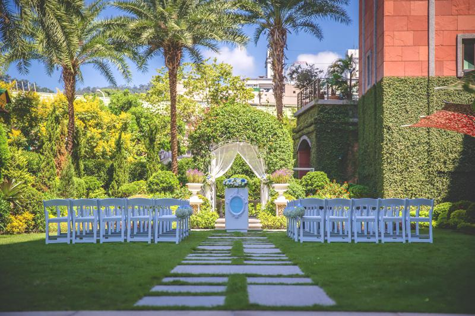</div>
<div>
<p>20-30桌（10人/桌），戶外證婚｜室內宴客</p>
<p><span style="color: #879460;">小編加碼推薦｜</span>維多麗亞酒店擁有多樣風貌，主打古典建築外觀、英式貴族鐘樓和戶外花園</p>
<p>推薦給喜歡典雅且想辦在飯店類型的新人喔！</p>
</div>
<p> </p>
<p><span style="color: #879460;">台北市區｜FOOSHION SKY</span></p>
<p>台北市信義區松壽路12號頂樓</p>
<p>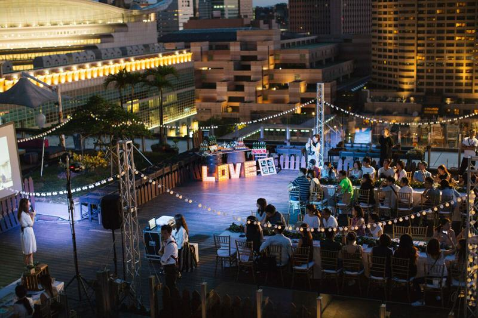</p>
</div>
</div>
</div>
</div>
<div class="SALvLe farUxc mJ2Mod">
<div class="i4J0ge">
<div class="EfDVh mod" data-attrid="kc:/location/location:address" data-hveid="CAcQAQ" data-md="1002" data-ved="2ahUKEwis7eHqrL_gAhUGvbwKHdMoB8wQkCkwEHoECAcQAQ" lang="zh-Hant-TW">
<div class="Z1hOCe">
<div data-dtype="d3ifr" data-local-attribute="d3adr" data-ved="2ahUKEwis7eHqrL_gAhUGvbwKHdMoB8wQghwoADAQegQIBxAC"></div>
</div>
</div>
</div>
</div>
<div class="mod" data-attrid="kc:/collection/knowledge_panels/has_phone:phone" data-hveid="CBMQAA" data-md="1006" data-ved="2ahUKEwis7eHqrL_gAhUGvbwKHdMoB8wQkCkwEnoECBMQAA" lang="zh-Hant-TW">
<div class="Z1hOCe"></div>
</div>
<p>
</p><div class="themify_builder_content themify_builder_content-3014 themify_builder themify_builder_front" data-postid="3014" id="themify_builder_content-3014">
<!-- module_row -->
<div class="themify_builder_row themify_builder_3014_row module_row module_row_0 clearfix gutter-default col_align_top" data-column-alignment="col_align_top" data-equal-column-height="" data-gutter="gutter-default">
<div class="row_inner_wrapper">
<div class="row_inner">
<div class="col-full first tb-column empty-column tb_3014_column module_column_0 module_column">
<div class="tb-column-inner">


 

</div><!-- /.tb-column-inner -->
</div>
<!-- /.tb-column -->
</div>
<!-- /row_inner -->
</div>
<!-- /row_inner_wrapper -->
</div>
<!-- /module_row -->
</div>
<!-- /themify_builder_content -->
</div><!-- /.entry-content -->
</div>

  <footer>
    <div class="container">
        <ul class="footerContactUsList">
            <li class="footerContactUsItem">
                <ul class="socialMedia">
                    <li class="pr-4">
                        <a target="_blank" href="https://www.facebook.com/dctwedding/?fref=ts">
                            
                        </a>
                    </li>
                    <li class="pr-4">
                        <a target="_blank" href="https://www.pinterest.com/dctweddingtw/">
                            
                        </a>
                    </li>
                    <li class="pr-4">
                        <a target="_blank" href="https://instagram.com/dctwedding?igshid=1rvf6aq8jeguq">
                            
                        </a>
                    </li>
                    <li class="pr-4">
                        <a target="_blank" href="https://line.me/R/ti/p/%40tzu6169y">
                            
                        </a>
                    </li>
                </ul>
            </li>
            <li class="footerContactUsItem">
                <a href="tel:+886285012909">02-8501-2909</a>
            </li>
            <li class="footerContactUsItem">
                <a href="https://goo.gl/maps/p3oqFeDBfSPU7pMfA" target="_blank">104台北市中山區敬業三路161巷27號</a>
            </li>
            <li class="footerContactUsItem">
                <p>Copyright © 2020 DCT Wedding All rights reserved.</p>
            </li>
        </ul>
        

    </div>
  </footer>

  <!--popover js-->
  <!-- <script src="https://unpkg.com/@popperjs/core@2/dist/umd/popper.js"></script> -->


  <!--bootstrap js-->
  <script src="https://code.jquery.com/jquery-3.4.1.slim.min.js" integrity="sha384-J6qa4849blE2+poT4WnyKhv5vZF5SrPo0iEjwBvKU7imGFAV0wwj1yYfoRSJoZ+n" crossorigin="anonymous"></script>
  <script src="https://cdn.jsdelivr.net/npm/popper.js@1.16.0/dist/umd/popper.min.js" integrity="sha384-Q6E9RHvbIyZFJoft+2mJbHaEWldlvI9IOYy5n3zV9zzTtmI3UksdQRVvoxMfooAo" crossorigin="anonymous"></script>
  <script src="https://stackpath.bootstrapcdn.com/bootstrap/4.4.1/js/bootstrap.min.js" integrity="sha384-wfSDF2E50Y2D1uUdj0O3uMBJnjuUD4Ih7YwaYd1iqfktj0Uod8GCExl3Og8ifwB6" crossorigin="anonymous"></script>

  
  <script src="assets/js/all.js"></script>
  <!-- emailjs -->
  <script type="text/javascript" src="https://cdn.emailjs.com/sdk/2.3.2/email.min.js"></script>
  
  <!-- DCT FB 開始 -->
  <!-- Load Facebook SDK for JavaScript -->
    <div id="fb-root"></div>
    <script>
        window.fbAsyncInit = function() {
        FB.init({
        xfbml : true,
        version : 'v7.0'
        });
        };

        (function(d, s, id) {
        var js, fjs = d.getElementsByTagName(s)[0];
        if (d.getElementById(id)) return;
        js = d.createElement(s); js.id = id;
        js.src = 'https://connect.facebook.net/zh_TW/sdk/xfbml.customerchat.js';
        fjs.parentNode.insertBefore(js, fjs);
        }(document, 'script', 'facebook-jssdk'));
    </script>

    <!-- Your Chat Plugin code -->
    <div class="fb-customerchat"
    attribution=setup_tool
    page_id="686068714820710"
    theme_color="#d4a88c"
    logged_in_greeting="Hello, 有什麼想法需求都可以與我們討論喔！"
    logged_out_greeting="Hello, 有什麼想法需求都可以與我們討論喔！">
    </div>
  <!-- DCT FB 結束 -->
</body>
</html>